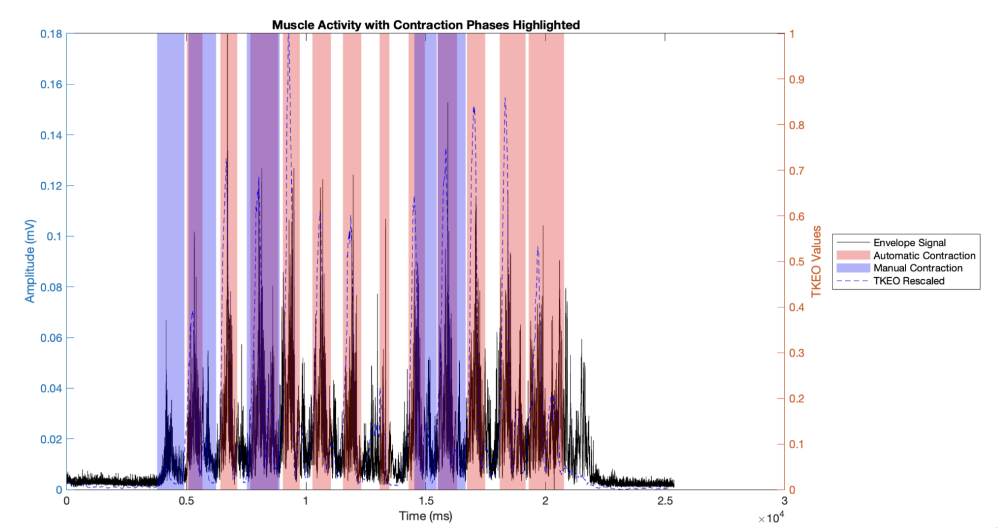
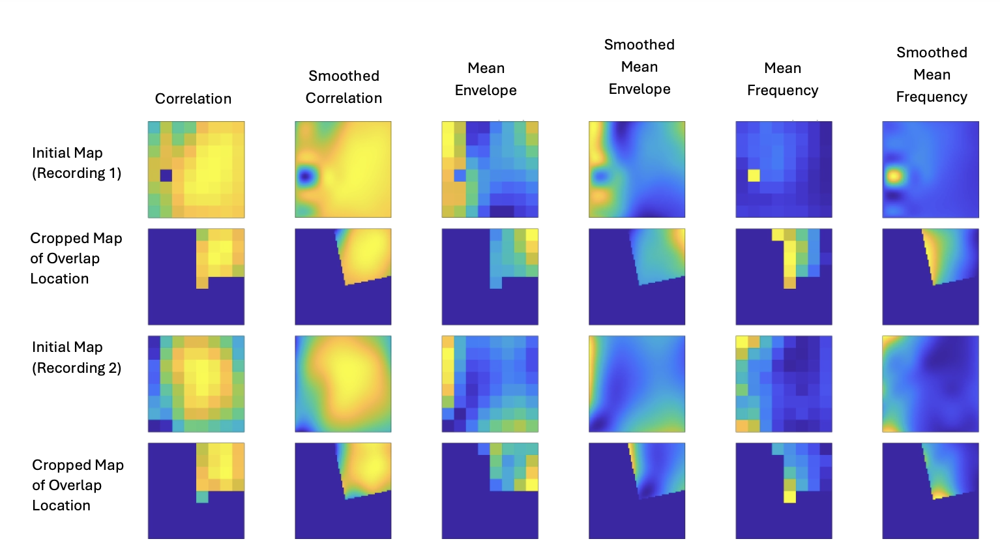
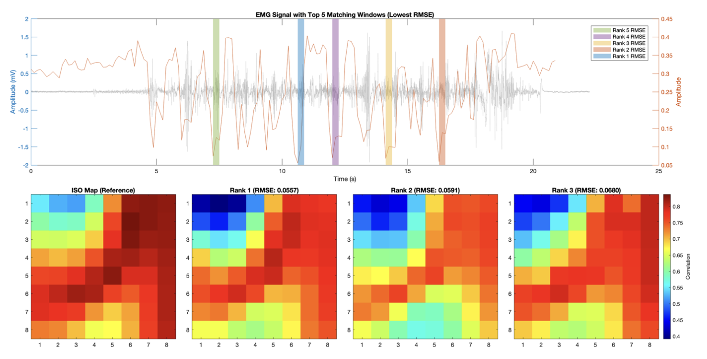

Improving EMG reliability for clinical stroke rehabilitation
I took on this project with the Human Motion Biomechanics Lab at UBC to expand my signal processing skills and work on a problem with real clinical value. The focus was on High-Density Surface EMG (HD-sEMG), which uses a grid of 64 electrodes to capture detailed spatial information about muscle activity. In a clinical setting like stroke rehabilitation, this technology has a lot of potential — but only if the recordings are reliable across sessions.
The core issue is sensor placement. When a patient comes back for a follow-up session, it is very difficult to place the electrode array in exactly the same location on the skin. Even small shifts between sessions introduce differences in the recorded signals that can obscure whether changes reflect actual recovery or just movement of the sensor. My goal was to determine the shift in sensor location between separate recordings so that signals could be accurately compared over time.
Extending the shift algorithm to dynamic exercises
When I joined the lab, an algorithm already existed to estimate sensor shift, but it had only been tested on isometric contractions — where the patient holds a static muscle contraction. The challenge was that clinically relevant exercises like the Timed Up and Go (TUG) test are dynamic: the patient stands, walks, and sits, and the EMG signal changes continuously throughout. Applying the existing algorithm to dynamic data did not work well because the signal characteristics are much less stable than during isometric holds.
Before improving the shift algorithm, I also needed to address a more immediate bottleneck: contraction labelling. The algorithm needs to know when contractions are occurring in the signal before it can compare recordings. Previously, this labelling was done manually by the lab, which took several weeks per dataset. With multiple participants and recording sessions, this was slowing down research significantly.

Automated contraction detection via TKEO
My first deliverable was improving the contraction labelling process. I developed an automated algorithm in MATLAB based on the Teager-Kaiser Energy Operator (TKEO), which detects the increasing energy in a signal that occurs at the start of an EMG contraction. The algorithm takes inputs from each of the 64 EMG channels and determines the most accurate set of contraction labels across all of them.
The challenge with using 64 channels is that a contraction does not appear the same way across every electrode — channels closer to the active muscle fibres have stronger signal-to-noise ratios, so a simple threshold applied uniformly does not work well. To handle this, I added an optimization step that aggregates the TKEO outputs across all channels and selects the contraction labels that are most consistent across the array.
The automatic labels were compared against the previous manual labels to validate the approach. The algorithm performance between the two methods had a less than 1% difference, confirming the automated labels were equivalent to the manual ones. What previously took the lab several weeks to complete now runs automatically by executing a single script.

Multi-feature spatial mapping for shift detection
Once contractions could be labelled automatically, I shifted my focus to improving the shift algorithm. My approach maps signal features relative to their location on the sensor array, then uses a gradient descent optimizer to find the overlap between the maps from two different recordings by minimizing the Root Mean Squared Error (RMSE). The difference in overlap location gives the shift between sessions.
The current method uses three features for each channel: the correlation of the signal between channels, the mean signal envelope, and the mean frequency. Each of these produces a spatial map across the 64-electrode grid that reflects the underlying muscle anatomy, and comparing maps between sessions reveals how the sensor has shifted.
The main challenge was extending this to dynamic exercises. During isometric contractions the signal is relatively stable, so comparing maps directly is straightforward. During dynamic movement the signal changes continuously, which makes it much harder to find a meaningful overlap. My current approach identifies windows within the dynamic recording where the signal most closely resembles the isometric reference, then performs the shift estimation on those windows.
This work is ongoing. I am currently focused on collecting EMG data from elderly participants and evaluating how the algorithm performs on muscles that differ from those in the young, healthy population used during initial development — where factors like reduced muscle mass and lower signal amplitude require adjustments to the feature extraction approach.
